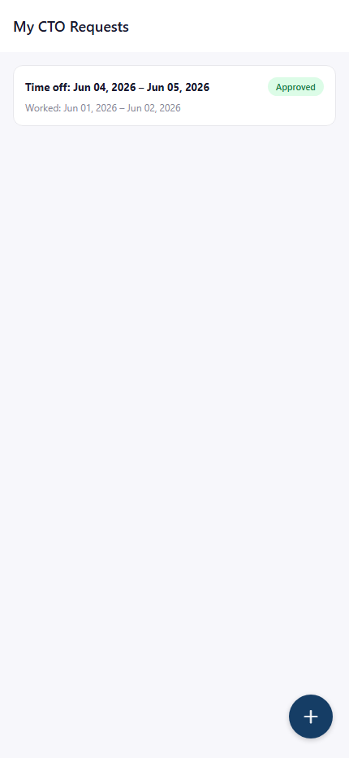
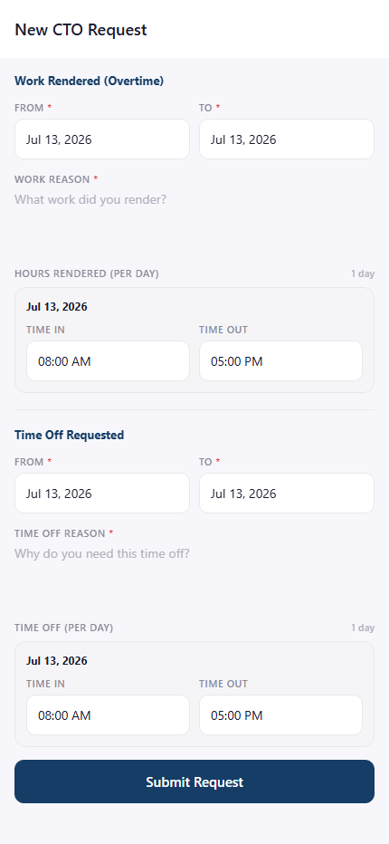
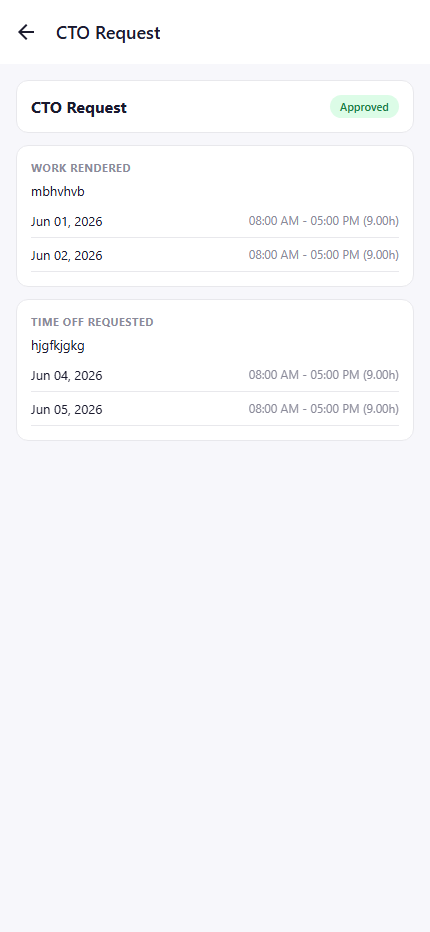

CTO Requests
File and track your own Compensatory Time-Off requests.

Your filed Compensatory Time-Off requests, pairing overtime worked with time off taken.

Two sections: the overtime work rendered, and the time off requested in exchange.

Shows both the work-rendered dates/hours and the time-off dates/hours side by side.
Rules & Validation
- Work-rendered dates and time-off dates — both required, with end dates on or after their start dates.
- If you have no immediate head assigned, your request skips the head-approval step and goes straight to HR.
- If HR assigns you a head while your request is still awaiting HR, it will automatically require that head's approval first before HR can finalize it.
Frequently Asked Questions
Common questions about CTO Requests.
CTO exchanges overtime you already worked for time off, rather than drawing from your leave credits like a regular Leave request.
Yes — the two sides of a CTO request are independent date ranges, each with their own day-by-day schedule.
It goes straight to HR. If you're later assigned a head while your request is still pending HR review, it will then need that head's approval before HR can finalize it.